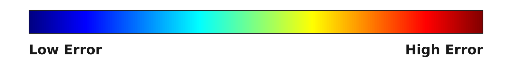

Exo2EgoHOI translates exocentric human demonstrations into egocentric observations that can guide robot execution through retargeting.
Abstract
Egocentric videos of human manipulation provide valuable visual experience for embodied intelligence, yet collecting such data at scale is costly. Exocentric-to-egocentric video generation offers a scalable alternative by transforming abundant third-person manipulation videos into first-person observations. However, existing methods often struggle to faithfully preserve demonstrated hand-object interactions (HOI) across large viewpoint changes due to insufficient fine-grained interaction guidance and weak object-centric anchoring. We present Exo2EgoHOI, an HOI-aware video generative framework for interaction-preserving exocentric-to-egocentric translation. To preserve fine-grained HOI, we introduce a unified 4D HOI prior that combines scene geometry, articulated hand renderings, and dense hand-object relation fields, together with a dual-branch residual adapter for injecting structural and relational cues into the video generation backbone. To preserve object consistency, we introduce Decomposed Gated Cross-Attention, which separately encodes object and background references and adaptively integrates global semantic and local appearance features as object-centric anchors. Experiments on ARCTIC-HOI and Ego-Exo4D demonstrate substantial improvements in object consistency and HOI preservation while maintaining competitive visual fidelity. In particular, on ARCTIC-HOI, Exo2EgoHOI improves object mIoU by 32.3% and reduces MPJPE and PA-MPJPE by 34.7% and 50.0%, respectively, relative to the respective best baseline results.
A unified 4D HOI prior guides scene geometry, hand motion, and interactions. HOI adapters inject these cues into the video model, while Decomposed Gated Cross-Attention uses object and background references to preserve appearance.
Qualitative comparisons
Select one of 20 qualitative examples. The comparison, hand mesh, and hand error videos play together at 10 fps.
Loading scene…
Paused
Loading scene…
Scroll sideways to see all columns →
Video comparison
01Exocentric Input
Video unavailable
02EgoWorld
Video unavailable
03Vista4D
Video unavailable
04WAN VACE
Video unavailable
05EgoX
Video unavailable
06Ours
Video unavailable
07Ego_GT
Video unavailable
Hand mesh
02EgoWorld
Hand-mesh video unavailable
03Vista4D
Hand-mesh video unavailable
04WAN VACE
Hand-mesh video unavailable
05EgoX
Hand-mesh video unavailable
06Ours
Hand-mesh video unavailable
07Ego_GT
Hand-mesh video unavailable
Hand error
02EgoWorld
Hand-error video unavailable
03Vista4D
Hand-error video unavailable
04WAN VACE
Hand-error video unavailable
05EgoX
Hand-error video unavailable
06Ours
Hand-error video unavailable
Hand mesh colors: left orange, right blue. Blank frames show no visible mesh.
Hand error: Mesh-vertex error relative to a WiLoR-based estimate of Ego_GT. Only same-side matched hands are colored; unmatched frames are blank.

Colors show relative error within each clip, method, and hand; they cannot be compared across videos or read as millimeters.
0.0 / 4.9 s
Quantitative comparisons
Full test sets. Best values are bold; second-best values are underlined.
ARCTIC-HOI
ARCTIC-HOI quantitative results. Higher is better for PSNR, SSIM, CLIP-I, mIoU, and CLIP-O; lower is better for the remaining metrics.
Method
Visual fidelity
Object consistency
Hand consistency
PSNR ↑
SSIM ↑
LPIPS ↓
CLIP-I ↑
mIoU ↑
Center-Err. ↓
CLIP-O ↑
MPJPE ↓
WA-MPJPE ↓
PA-MPJPE ↓
WAN VACE
12.78
0.6163
0.5115
0.8485
0.2336
0.0893
0.8080
2870.22
371.18
20.36
EgoWorld
11.90
0.4652
0.6203
0.7995
0.2241
0.1131
0.7869
2282.03
440.60
57.92
Vista4D
13.58
0.6614
0.4324
0.8737
0.2768
0.0929
0.8176
2123.78
387.73
28.91
EgoX
11.83
0.5941
0.4743
0.8910
0.2933
0.0804
0.8345
2019.81
325.56
22.12
Ours
13.43
0.6685
0.3860
0.9175
0.3881
0.0583
0.8557
1318.74
313.75
10.18
Ego-Exo4D
Ego-Exo4D quantitative results. Higher is better for PSNR, SSIM, CLIP-I, mIoU, and CLIP-O; lower is better for the remaining metrics.